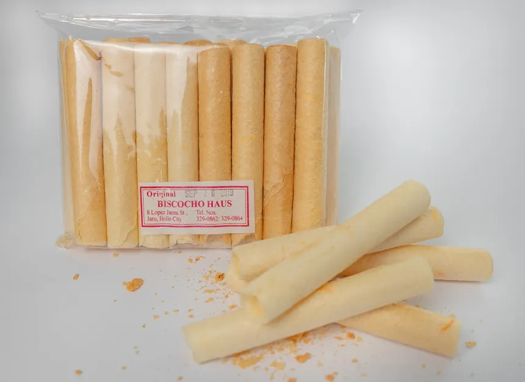
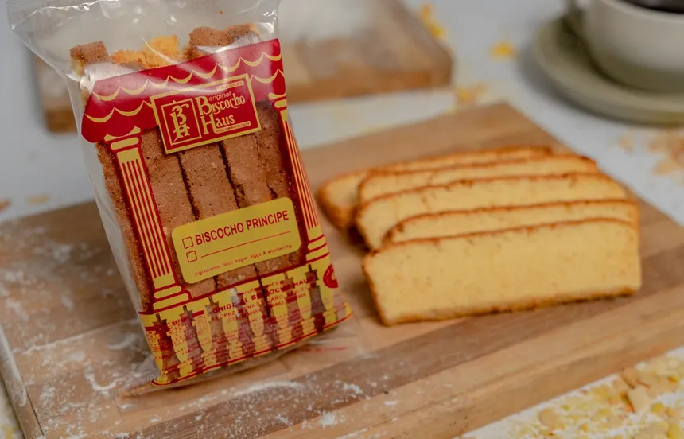

Silvanas
Dumaguete's iconic frozen treat — meringue wafers sandwiching cashew-scented buttercream, coated in cookie crumbs.
View Details
Chicken Inasal
Bacolod's gift to Philippine cuisine — lemongrass and vinegar-marinated chicken, grilled to smoky perfection.
View Details
Muscovado Sugar
Unrefined raw cane sugar with a rich molasses depth — the lifeblood of the Negrense sugar heritage.
View Details
Piaya
A sweet, flaky flatbread filled with muscovado sugar — Bacolod's most beloved take-home snack.
View Details
Sans Rival Cake
A decadent Dumaguete dessert of crispy cashew meringue layered with rich French buttercream.
View Details
MassKara Festival Mask
Hand-painted souvenir masks adorned with flowers and glitter — a wearable symbol of Bacolod's joy.
View Details
Banana Pinasugbo
Caramelized banana chips glazed in muscovado sugar syrup — a crunchy, melt-in-your-mouth Negrense classic.
View Details
Barquillos
Thin, crispy rolled wafer tubes with a delicate sweetness — a beloved Bacolod street snack with Spanish roots.
View Details
Biscocho
Twice-baked bread toasted to a golden crisp, brushed with butter and sugar — a pantry staple and pasalubong favorite.
View Details
Upcycled Decor
Handcrafted home décor made from repurposed sugarcane byproducts and local materials — sustainable Negrense artisanship.
View Details